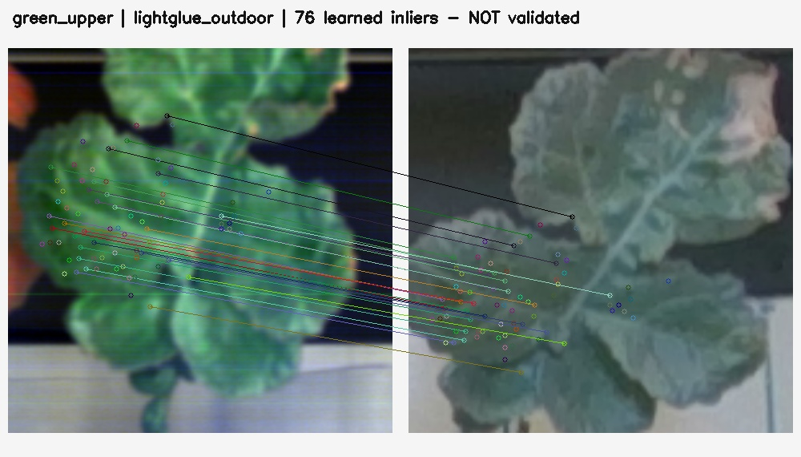
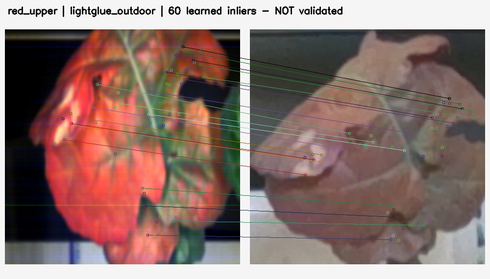
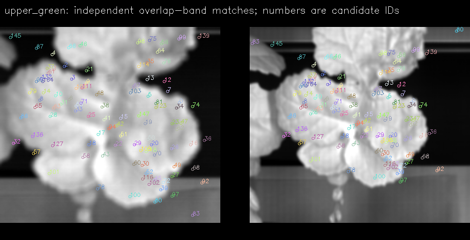
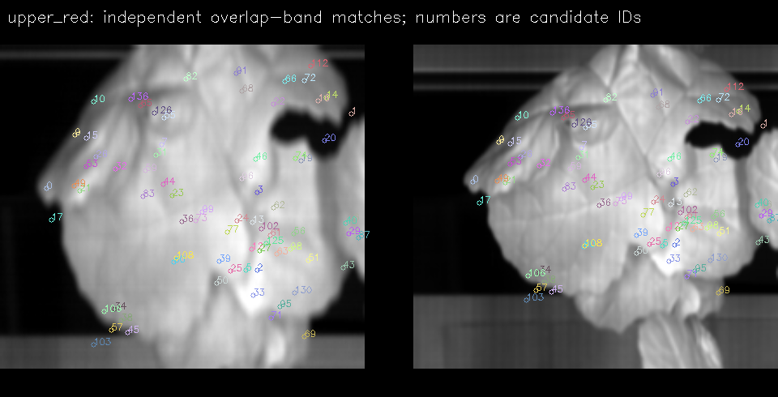
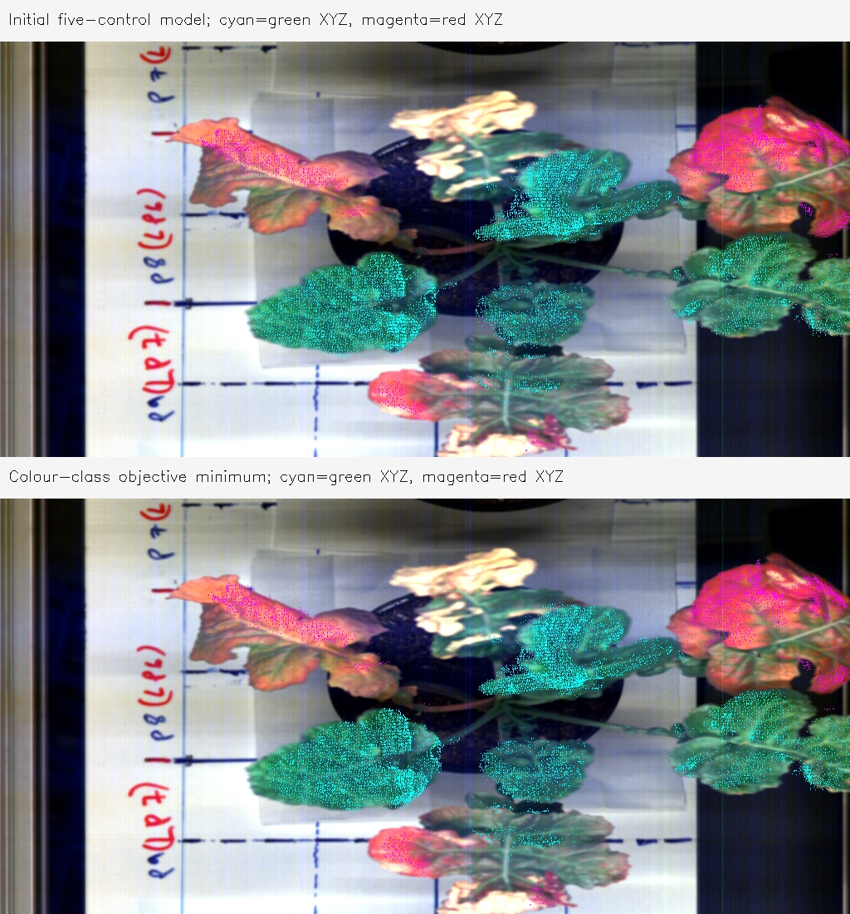

Existing Plant 5 vertices on two upper leaves; 862 also have a separate FX17 assignment.
Not measurement-readyConfigurations across six Plant 5 leaf regions.
24 frozen maps retainedLandmark attempts retained, including uncertainty and ambiguous features.
Provisional source proposals pass a two-view geometry screen.
P2: 2 · P3: 9 · P4: 2Move beyond three spectral markers
The new illustration maps exact native FX10 measurements onto 1,050 upper-green and 1,288 upper-red leaf vertices. FX17 contributes separate spectra at 551 green and 311 red vertices. It uses the recorded geometry and frozen local image maps. It does not fill missing leaf surfaces or synthesize spectra.
Open partial 3D spectral inspectorMapping provenanceAvailable now: separate FX10 and FX17 layers, 224 measured bands each; wavelength changes colour the mapped surface points.
How each point earns a place in this preview
Only the eroded learned inlier region and matching colour-class tissue in both images are used. Native spectral pixel → native RGB → undistorted depth → existing P5 vertex. Depth needs at least two stereo votes, a vertex within 3 mm and 1.5 image pixels, and support from at least two of three RGB views. Deduplication reduces 6,781 geometry-supported proposals to 2,338 vertices.
These checks establish geometry support, not exact spectral material identity. The two displayed regions were selected after reviewing their evidence; no map was refitted to the checks. Pale tissue and boundaries may be omitted. Where the white reference did not cover detector columns, normalized values remain invalid.
What improved—and what the evidence supports
| Result | New evidence | Current interpretation |
|---|---|---|
| Upper green leaf | Three in-domain annotated checks: 0.67–7.16 RGB pixels across frozen variants. | Useful approximate local mapping. Several-pixel uncertainty remains. |
| Upper red leaf | Four in-domain checks: 1.90–5.60 RGB pixels; one has low identity confidence. | Local correspondence is plausible. Whole-leaf accuracy is unverified. |
| Lower green leaf | New medium-confidence fork: 7.92–8.69 RGB pixels. Other proposed forks remain ambiguous. | A candidate can be shown with its uncertainty; one questionable old feature cannot determine validity alone. |
| Physical camera projection | Gantry direction, optical priors, capture-run bridge and silhouette alignment tested. | Useful coarse placement. Matching a leaf silhouette does not prove pixel identity. |
| Other P5 leaves | Lower-red and variegated checks disagree by about 7–8 and 18–19 RGB pixels; central-green checks are outside the learned region. | Insufficient support for an accurate surface product from those maps. |
These are disagreements with uncertain image marks, not measured physical accuracy. Typical subjective localization radii are 4–5 HSI pixels and 3 RGB pixels; they are not confidence intervals.
green_lower_4 feature was explicitly marked “not accepted” and “not independent.” Its exact lateral-vein identity is ambiguous. The earlier 7–8 pixel screening discrepancy therefore cannot alone establish a definitive physical failure. This correction does not prove the old map accurate; it makes the interpretation more honest.

Both spectral cameras are included
FX10 and FX17 were both tested in the physical model branch. New cross-sensor tracking treats the two upper leaves separately, using their own overlap-band appearance. A successful FX10–FX17 track still needs tissue, geometry and visibility checks before it becomes a 3D spectral assignment.
| Leaf | FX10→FX17 image-consistent tracks | Final FX10 surface samples | Final FX17 surface samples |
|---|---|---|---|
| Upper green | 11,575 | 1,050 | 551 |
| Upper red | 8,044 | 1,288 | 311 |
| Total | 19,619 | 2,338 | 862 |
Image tracks are not all tissue or valid 3D assignments. Geometry/tissue intersection gives 902 FX17 candidates, reduced to 862 unique native-pixel/vertex associations. Sensor spectra remain separate; they are not spliced into a combined spectrum. The 154,648-point original Plant 5 context is unchanged.




Why a good board fit is not enough
The recorded board points are almost coplanar. A planar target cannot uniquely determine three of the nine scan-camera coefficients governing elevated points. The selected leaves are roughly 35–39 cm above the board. A low board fitting residual therefore does not establish equally precise leaf registration.
The physical and silhouette primaries differ by a median 5.52 and 95th percentile 13.47 native HSI pixels over the common visible P5 region. This is model sensitivity, not an accuracy interval.

What happened on Plants 1–4?
Sixteen additional runs tested two recorded RGB views and two image channels per plant. The screen below checks whether repeated source proposals agree with existing geometry; no new dense result was accepted from these runs.
| Plant | Unique proposals per view | Repeated source proposals | Pass geometry screen |
|---|---|---|---|
| P1 | 0 / 0 | 0 | 0 |
| P2 | 8 / 5 | 3 | 2 |
| P3 | 16 / 14 | 9 | 9 |
| P4 | 2 / 2 | 2 | 2 |
Channels were deduplicated. The screen uses ≤10 mm between associated existing vertices and ≤3 RGB pixels forward reprojection. No independently verified anatomical landmark set exists for these pairs. Nearby geometry alone does not prove exact spectral localization.
Inspect every two-view check →How much was actually tried?
The counts describe different stages and overlap; adding them together would exaggerate the evidence.
| Method branch | Executed work | Saved evidence |
|---|---|---|
| Physical scan-camera | 8 base configurations across two sensors; 56 fits including leave-one-feature/sheet diagnostics. | Open evidence |
| Capture-run bridge | 12 joint fits using 386 unique paper correspondences. | Open evidence |
| New physical controls + colour silhouette | 6 frozen physical variants; 3 final silhouette starts, with flawed earlier runs preserved. | Open evidence |
| Local multimodal registration | 6 executed MIND-style / mutual-information fields; 4 receive fresh withheld checks. | Open evidence |
| Learned matching | 72 configurations; 138 affine/projective hypotheses; 24 frozen base/smoothed maps. | Open evidence |
| Additional plants | 16 matching runs and 8 small-patch fitted hypotheses. | Open evidence |
| Independent fitting audit | 13 first-round image labels + 10 adaptive second-round attempts; no coordinates adjusted after scoring. | Open evidence |
“Withheld” means coordinates were kept out of fitting. It does not mean the labels are independently surveyed physical truth. Second-round leaf selection followed the first-round evidence; candidate maps were unchanged.
What still limits the result?
The recorded data
Occluded or absent surfaces, differences in sensor viewpoint and appearance, possible leaf motion, uncertain dark acquisition and panel reflectance, and incomplete reference coverage.
The methods
Local maps cover limited regions. Vein patterns can repeat. Elevated camera geometry remains weakly constrained. Colour masks and visible-surface choices are provisional.
The validation
Image landmarks have uncertain centres and identities. A few close matches do not establish a per-point error map, calibrated reflectance or generalization to another dataset.
Better elevated calibration targets, repeatable cross-camera landmarks, recorded timing, documented white/dark references and additional viewpoints would strengthen the evidence. Further software work remains possible; these tests do not exhaust every algorithm.
Keep the results and their evidence together
Original captures, reconstruction geometry, spectra and capture/gantry software were preserved. No publication or hardware readiness is implied by this local report.